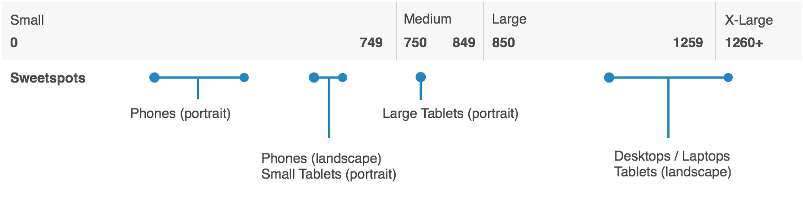
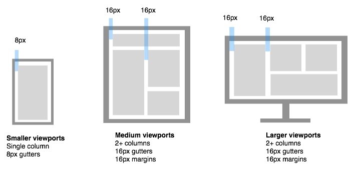
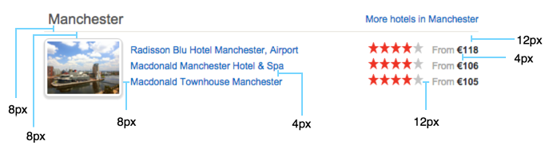

Existing breakpoints with typical viewport ranges. Focus design efforts around these ranges.
When laying out components on the page use a 12-column grid with percentage based columns and fixed width margins and gutters. This provides flexibility to create many different layouts and page types.
Default margins and gutters set to 8px, use multipes of 4px if design requires something different.
Default margins and gutters set to 16px, use multipes of 8px if design requires something different.
Content and functional elements that sit with in a component do not need to sit on a grid.
Use the options below for defining padding, margins etc when laying out content and functional elements inside components
Below is an example of how this might apply to an existing component. Spacing and positioning are used to help create visual relationships between information types.
